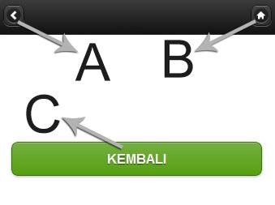

Keterangan :
- A : Tombol untuk kembali ke halaman Sebelumnya
- B : Tombol untuk kembali ke halaman Utama
- C : Tombol untuk kembali ke halaman Sebelumnya, Tombol ini digunakan bagi jika Tombol A tidak berfungsi
- Untuk keluar dari aplikasi ini adalah dengan kembali ke Halaman Utama kemudian tekan Back Bottom pada perangkat androidmu